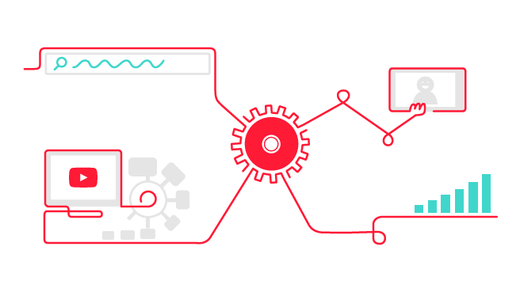
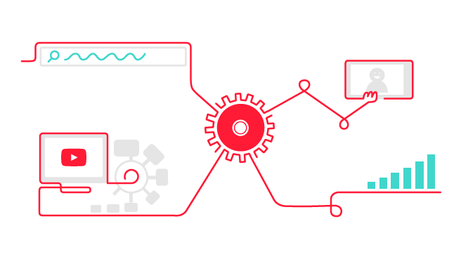
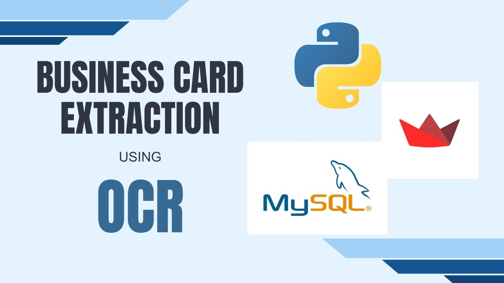
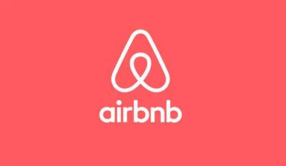

This project aims to develop a machine learning model to predict customer loan defaults using historical data, focusing on features like credit history and financial status. It involves data preprocessing, exploratory analysis, and training various classification models such as Logistic Regression and Random Forest.
 

It is a Streamlit app that extracts YouTube data via the Google API, stores it in MySQL, and visualizes insights using Matplotlib, Seaborn, and Plotly.
It allows users to retrieve, analyze, and interact with data through a user-friendly interface.
The tool supports data collection, SQL storage, and performance analysis for better insights.

BizCardX extracts business card data using EasyOCR, stores it securely in MySQL, and ensures authentication and data protection.
Users can easily retrieve, edit, and manage business card details.
It offers seamless data extraction, verification, and secure storage.

This project predicts resale prices of flats in Singapore using a machine learning model based on historical transaction data.
It considers factors like location, flat type, floor area, and lease duration to assist buyers and sellers.
The model is deployed as a web application for easy user interaction.
This project explores and visualizes PhonePe Pulse data (2018-2023) by extracting it from GitHub, storing it in MySQL, and displaying insights through an interactive dashboard using Streamlit and Plotly.
It enables users to analyze transaction trends efficiently with various data visualizations.

This project analyzes Airbnb data using MongoDB Atlas, performing data cleaning, geospatial visualization, and price/availability analysis through interactive Streamlit maps and dynamic plots. It explores pricing trends, seasonal occupancy, and location-based insights using MongoDB queries and aggregations.
A comprehensive dashboard in Tableau or Power BI presents key findings for better decision-making.
This project predicts copper selling price and status using machine learning, with a Random Forest regression model for price and an Extra Trees classification model for status.
Data preprocessing included cleaning, handling outliers, and feature engineering to optimize predictions.
A Streamlit app enables users to input data and obtain interactive predictions.